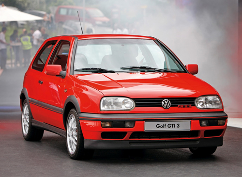
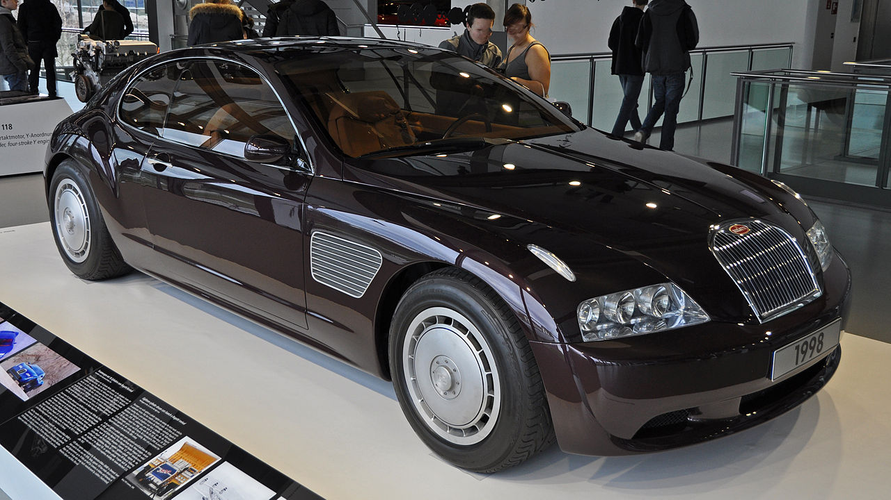
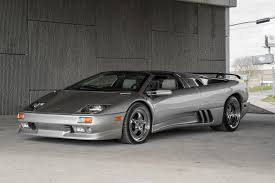
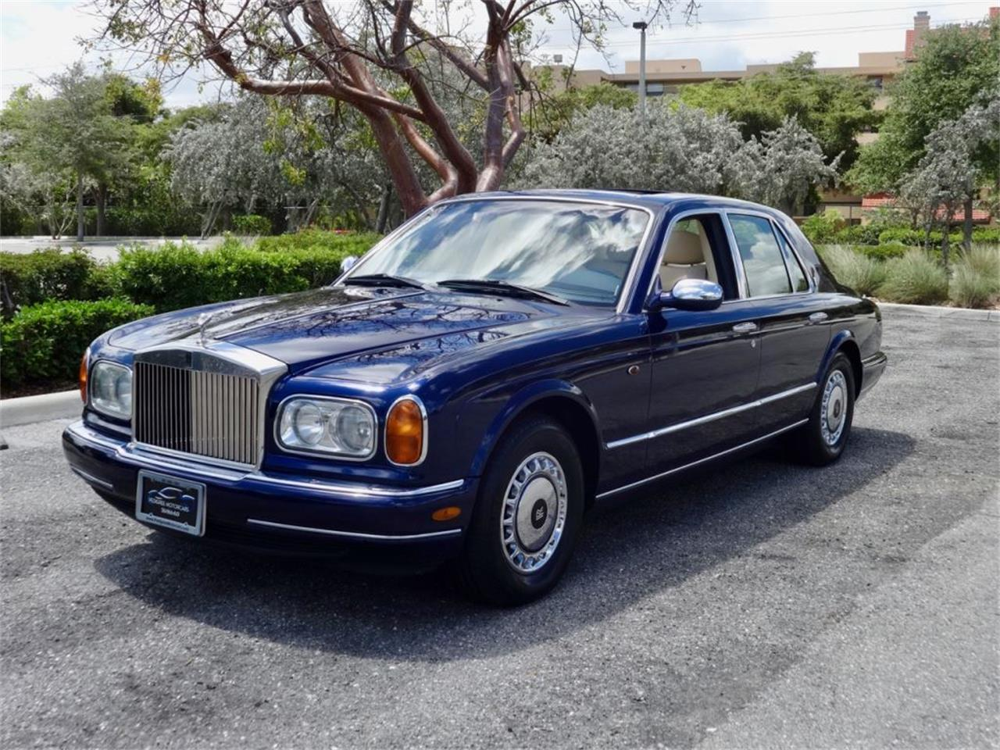

The final version of the Opel Kadett was voted European Car of the Year on its launch in 1984, as was the Opel Rekord's successor - the Omega - two years afterwards.

With the radical changes in car design that took place throughout the 1970s and into the 1980s, Ford responded by substantially altering its model line-up.
fter its rejuvenation during the 1970s, VW modernised its model ranges during the first half of the 1980s and continued to enjoy strong sales in Germany and most other European markets.

The VW Polo was updated in 1990, an all-new model finally arriving in 1994, and the MK3 Golf was voted European Car of the Year shortly after its launch in 1991.

The West of Germany was far more technically advanced in comparison with the East, with the divide ending with German reunification in 1990.

By the end of the 1990s, VW moved into the luxury and supercar end of the market and acquired Bentley of Britain and the Bugatti and Lamborghini marques from Italy.